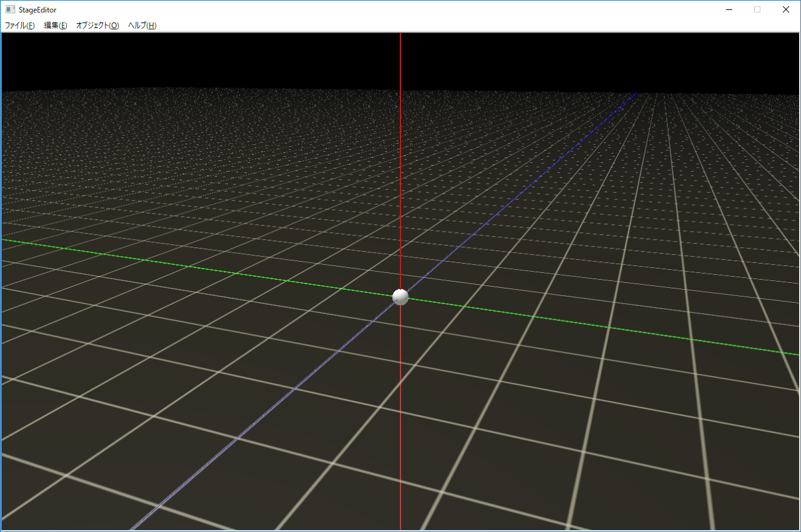
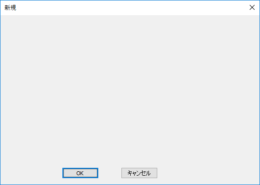

【ステップ１】ステージエディタの雛形
ステージエディタプロジェクトの最初のステップは
ひな形です。
StageEditor01というディレクトリ内のソリューションを開いてください。
VisualStudio2015の場合は
StageEditorVS2015.slnを、
VisualStudio2017の場合は
StageEditorVS2017.slnを開いてください。
このソリューションを実行するには
MFCがあらかじめセットアップされている必要があります。
また
VisualStudio2017をお使いの方は
Windows8.1SDKがセットアップされているか確認ください。
ビルドして実行すると以下の画面が現れます。

図st01a
この画面は
オブジェクトの配置をする画面です。コントローラでカメラの回転をすることができます。また、中心に白い球があり、これは
カメラの視点です。コントローラで移動することができ、ステージ内のどこにオブジェクトを配置するか見ることができます。
カメラは寄ったり引いたりできます。これはh化のサンプルと同じです。
さて、ここに
ゲームオブジェクトを配置して、それをデータとして保存できるようにします。
保存形式は
フルサンプル604で紹介した
オブジェクトビルダーで利用できる
xml形式のファイルです。
オブジェクトビルダーのサンプルでは各ゲームオブジェクトに
XMLのノードを渡して処理方法は各オブジェクトに任せます。
この形式だと汎用性も高く、XMLなので保守性も高いと思います。
<>br />
さて、今回のサンプル
StageEditor01は
ステージエディタの雛形です。ですから、目立った実装はされていません。
しかしながら、
BaseCrossのフルバージョンが持ってるすべて機能を利用することができます。
表示されている黒い背景の画面は、
ゲーム画面そのものです。ウインドウの枠やメニューがありますが、この画面の中は
DirectX11の世界となっています。
それでは、メニューの
オブジェクト－新規追加を選択してみましょう。以下のダイアログがでます。

図st01b
このように、何も配置されてないダイアログです。
OKか
キャンセルでダイアログを終了します。
これからこのひな型に
ステージエディタを実装していきます。
実際にプログラミングするには
MFCの知識が必要かと思いますが、ネットにはいろんな情報がありますので、調べてみるといいと思います。
このプロジェクトは
MFCの
シングルドキュメントといいうのを使っています。
ドキュメントビューアーキテクチャーは使用していません。
MFCに精通している人であれば以上の情報でなんとなく構造がわかると思います。
ここで紹介したサンプルはあくまで雛形なので、解説はこの辺にしておきます。詳しくはコードを読んでください。
この後は
ステップ２に向けて、
オブジェクトの配置ができるようにしたいと思います。
その過程は
StageEditor02というサンプルに実装していきます。
まとまった段階でドキュメントを記述します。しばらくはGitHubの更新情報（コミット）を確認ください。